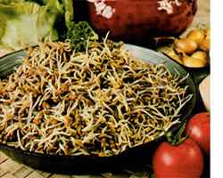
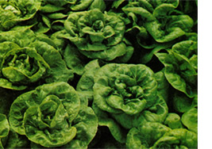
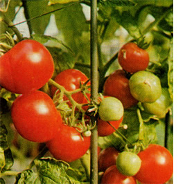
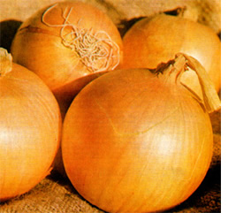
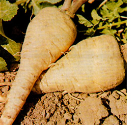
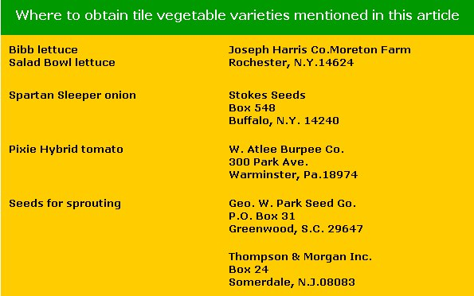

There's certainly no shortage of things to do in the garden throughout the spring and summer months . . . as you well know, if you tended a vegetable patch this year. By the time fall rolls around, however, most of your spring and summer crops have borne fruit . . . you've already made plantings of broccoli, brussels sprouts, cabbage, kale, turnips, and other cold-weather fare . . . andin general-you've done just about everything you're going to do before the first killing frost hits. The question is, what do you do now?
Actually, there are many things you can do from September to November to ensure a well-stocked pantry in the cold months ahead. For example:
Now is a good time to mulch your parsley. Pile shredded leaves against the rows and in the coming weekseven when there's snow on the ground -you'll find more than enough readyto-harvest greenery in your garden to flavor omelettes, soups, fish dishes, and salads.
Spinach and loose-leaf lettuce are also surprisingly hardy. Make sowings of these vegetables by September land heap leaves against the rows for frost protection-and you're likely to have good-sized plants that'll survive well into the winter. (Your spinach may even stay green all winter, if conditions in your area are mild enough.)
Many root vegetables will keep in the ground over winter . . . the problem is, it's impossible to get at the buried vegetables after the ground freezes. You can keep the soil open longer, howeverand harvest carrots, parsnips, turnips, salsify, etc., right up until Christmassimply by placing bales of hay over the rows. (When you want to harvest a few roots, just pull back one of the bales and dig in.)
Then too, of course, root vegetables can easily be stored in a cool (40°F or so) basement. Just remove the leafy top growth and bury the roots in boxes or mounds of peat moss, sand, or compost. (Take special care to see that each root is completely surrounded by whatever packing material you're using.)
Two other vegetables that take basement storage well are onions and winter squash. In the case of onions, all you have to do is brush the soil from the roots and hang the bulbs from strings in a dry, dark, cool (preferably no more than 60°F, to prevent sprouting) place. If you have difficulty keeping onions, you'll want to try a new variety called Spartan Sleeper, which has been bred to stay firm and crisp even under adverse storage conditions.
Butternut, buttercup, acorn, and Hubbard squashes all prefer a storage temperature of around 55°F. (They can be conveniently stored on shelves.) For best results, leave about an inch of stem on the fruits when you harvest them.
You can greatly extend many of your garden plants' productive lives by growing them in (or transplanting them to) a cold frame in the frigid months. And right nowwhile there are still a few weeks of relatively temperate weather left-is as good a time as any to plan and construct such a unit.
In my experience, the best cold frames are those that have wooden sides and glasspaned (not plastic- or fiberglass paned) tops, with the sides themselves extending at least a foot below ground level for good heat retention. The reason I specify glass-paned is that during the short, often-cloudy days of winter, your plants need all the light they can get, and plastics are simply inadequate for the purpose. Only clean, clear glass will pass sufficient light to allow you to grow vegetables reliably in the winter months. (For a further discussion of cold frame gardening, read "Building a Cold Frame and Hotbed", pages 44-48, MOTHER NO. 38.)
If you have the wherewithal, now would also be a good time to erect a small greenhouse. (See "MOTHER's MiniManual: Greenhouse Gardening", pages 7182 of MOTHER NO. 42.) It's interesting to note that-because of the higher yields, faster plant growth, and longer growing season attainable in a controlled environment-a 96square-foot (8' X 12') greenhouse is roughly equivalent to a 480-square-foot (20' X 24')outdoor garden.
Here again-as with the cold frame -don't be fooled by advertisements which may claim that you can grow tomatoes in January under plastic or fiberglass windows. Ordinary glass is still the best window material for greenhouses.
The most worthwhile crops to grow in your greenhouse-once you've built it -are lettuce (especially Salad Bowl and Bibb varieties, which grow well in low light), parsley, spinach, and the root crops. Cabbage, zucchini squash, and cucumbers may also prove productive in 12" pots, although you'll be assured of greater success if you time your planting so that maturity occurs in March, when the days are longer.
Greenhouse tomatoes are something else again. They're more demanding of both light and heat than the foregoing crops (all of which can be grown at fairly low temperatures), and their fruit will not ripen without lots of light and day time temperatures of at least 70°.
Your best bet for producing greenhouse tomatoes is a variety known as Pixie Hybrid, which was developed for container growing. This plant-the fastest-ripening of all indoor tomatoes -is short and compact, requires only small stakes for support, and can get by on lower light intensities and lower temperatures than other varieties of tomatoes.
Even when it's too late in the season to plant anything-and you don't have a cold frame or a greenhouse-you can always grow sprouts. These "instant vegetables" yield an edible "harvest" in only six to 10 days and offer the dual advantage of requiring neither soil nor light for their growth. All they really need is moisture . . . and that can come from a wet paper towel.
If you're new to sprouting, try alfalfa. Its shoots are sweet and they make a delicious sandwich filling or salad vegetable (raw or cooked). Other sprouting seeds worth trying include fenugreek (spicy-tasting), adzuki bean (sweet and nutty), and oats (wild and nutty).
For more information on sprouts and sprouting, consult "Raise Your Own Sprouts . . . Even in a Backpack", pages 3638 of MOTHER NO. 43, the sprouting foldout in MOTHER NO. 31, or the special eight-page feature on sprouts in MOTHER NO. 12.
By now, I hope I've given you enough ideas to get you started on the fall gardening activities that far too many of us overlook. As I said before, there are many things you can do in the garden right now to ensure a good supply of fresh edibles in the cold months ahead. If nothing else, you can always sit down with a pen, paper, and envelopes and start writing for next year's seed catalogs! -
|
 PHOTOS BY THE AUTHOR |
 |
 |
|
 |
 |
 |